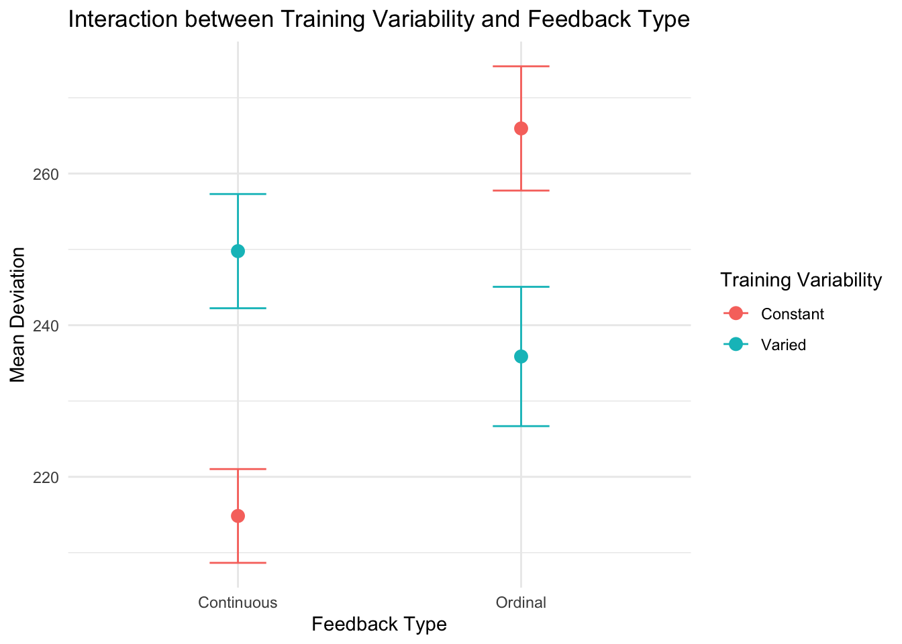
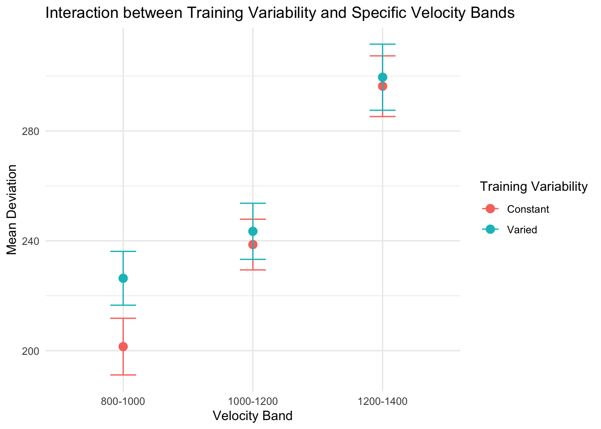

The fixed effects estimates and their significance levels are as follows:
The intercept (212.430) represents the estimated mean devMean for the reference group (constant training, ‘orig’ order, and continuous feedback).
conditVaried (53.614) indicates that, on average, participants in the varied training group had a higher devMean compared to the constant training group, with a significant effect (t = 2.685).
bandOrderrev (9.478) suggests that the ‘rev’ order manipulation had a small and non-significant effect on devMean (t = 0.435).
fbordinal (56.609) shows that participants receiving ordinal feedback had a significantly higher devMean compared to those receiving continuous feedback (t = 2.523).
The two-way and three-way interaction terms (conditVaried:bandOrderrev, conditVaried:fbordinal, bandOrderrev:fbordinal, and conditVaried:bandOrderrev:fbordinal) were not significant, indicating that the effects of training variability, order manipulation, and feedback type did not significantly interact with each other.
In summary, the analysis suggests that training variability and feedback type have significant main effects on participants’ performance in the visuomotor extrapolation task. Participants in the varied training group and those receiving ordinal feedback had higher devMean values, indicating better performance. However, the order manipulation (‘orig’ and ‘rev’) did not have a significant effect on performance. Additionally, there were no significant interactions between the factors, suggesting that their effects on performance were independent of each other.
Code
model_vb<-lmer(devMean~condit*bandOrder*fb*vb+(1|id), data =dtestAgg)summary(model_vb)
The fixed effects estimates and their significance levels are as follows:
The intercept (252.99) represents the estimated mean devMean for the reference group (constant training, ‘orig’ order, continuous feedback, and the lowest velocity band).
conditVaried (134.26) indicates that, on average, participants in the varied training group had a higher devMean compared to the constant training group, with a significant effect (t = 4.434).
bandOrderrev (-60.79) suggests that the ‘rev’ order manipulation had a small and marginally significant effect on devMean (t = -1.812).
fbordinal (143.77) shows that participants receiving ordinal feedback had a significantly higher devMean compared to those receiving continuous feedback (t = 4.244).
The main effects of the velocity bands (vb350-550, vb600-800, vb800-1000, vb1000-1200, vb1200-1400) show that different velocity bands have varying effects on devMean, with some bands leading to significantly lower devMean values compared to the reference band (e.g., vb600-800: -102.59, t = -4.148).
The two-way, three-way, and four-way interaction terms provide insights into how the effects of training variability, order manipulation, feedback type, and velocity band interact with each other. Some notable significant interactions include:
conditVaried:bandOrderrev (-173.94, t = -3.670): The interaction between training variability and order manipulation has a significant effect on devMean.
conditVaried:fbordinal (-147.69, t = -2.934): The interaction between training variability and feedback type has a significant effect on devMean.
conditVaried:vb800-1000 (-98.39, t = -2.756), conditVaried:vb1000-1200 (-159.64, t = -4.394), and conditVaried:vb1200-1400 (-160.75, t = -4.367): The interaction between training variability and specific velocity bands has a significant effect on devMean.
In summary, the updated analysis suggests that training variability, order manipulation, feedback type, and velocity band all have significant main effects on participants’ performance in the visuomotor extrapolation task. Additionally, there are significant interactions between these factors, indicating that their effects on performance are not independent of each other.
Interaction between variability and order
Code
library(ggplot2)interaction_plot_1<-ggplot(dtestAgg, aes(x =bandOrder, y =devMean, color =condit))+stat_summary(fun =mean, geom ="point", size =3)+stat_summary(fun.data =mean_se, geom ="errorbar", width =0.2)+theme_minimal()+labs(title ="Interaction between Training Variability and Order Manipulation", x ="Order Manipulation", y ="Mean Deviation", color ="Training Variability")interaction_plot_1
Code
table_2<-dtestAgg%>%group_by(condit, bandOrder)%>%summarise(mean_deviation =mean(devMean), .groups ="drop")kable(table_2, caption ="Mean Deviation by Training Variability and Category Order")
Mean Deviation by Training Variability and Category Order
condit
bandOrder
mean_deviation
Constant
Original
231.9570
Constant
Reverse
244.3648
Varied
Original
264.3575
Varied
Reverse
221.6839
Variation and Feedback
Code
interaction_plot_2<-ggplot(dtestAgg, aes(x =fb, y =devMean, color =condit))+stat_summary(fun =mean, geom ="point", size =3)+stat_summary(fun.data =mean_se, geom ="errorbar", width =0.2)+theme_minimal()+labs(title ="Interaction between Training Variability and Feedback Type", x ="Feedback Type", y ="Mean Deviation", color ="Training Variability")interaction_plot_2

Code
library(knitr)table_1<-dtestAgg%>%group_by(condit, fb)%>%summarise(mean_deviation =mean(devMean), .groups ="drop")kable(table_1, caption ="Mean Deviation by Training Variability and Feedback Type")
Mean Deviation by Training Variability and Feedback Type
condit
fb
mean_deviation
Constant
Continuous
214.8380
Constant
Ordinal
265.9528
Varied
Continuous
249.7688
Varied
Ordinal
235.8744
interaction between Variation and Band
Code
selected_vb<-c("800-1000", "1000-1200", "1200-1400")dtestAgg_filtered<-dtestAgg%>%filter(vb%in%selected_vb)interaction_plot_3<-ggplot(dtestAgg_filtered, aes(x =vb, y =devMean, color =condit))+stat_summary(fun =mean, geom ="point", size =3)+stat_summary(fun.data =mean_se, geom ="errorbar", width =0.2)+theme_minimal()+labs(title ="Interaction between Training Variability and Specific Velocity Bands", x ="Velocity Band", y ="Mean Deviation", color ="Training Variability")interaction_plot_3

Code
table_3<-dtestAgg%>%group_by(condit, vb)%>%summarise(mean_deviation =mean(devMean), .groups ="drop")kable(table_3, caption ="Mean Deviation by Training Variability and Velocity Band")
Mean Deviation by Training Variability and Velocity Band
condit
vb
mean_deviation
Constant
100-300
306.7256
Constant
350-550
223.9614
Constant
600-800
164.6083
Constant
800-1000
201.4917
Constant
1000-1200
238.6360
Constant
1200-1400
296.2888
Varied
100-300
280.1615
Varied
350-550
220.4217
Varied
600-800
197.1750
Varied
800-1000
226.3583
Varied
1000-1200
243.4624
Varied
1200-1400
299.5598
Summary
Results
The primary purpose of the HTW study was to examine the influence of training variability on learning and generalization in a visuomotor extrapolation task. Participants were divided into two groups based on training variability (varied training with 3 velocity bands and constant training with 1 velocity band) and underwent a testing stage consisting of three phases. The study employed two between-subject manipulations: order manipulation (‘orig’ and ‘rev’) and feedback type (‘continuous’ and ‘ordinal’). Participants’ performance was measured by calculating the distance between the produced x-velocity and the closest edge of the current velocity band, with lower distances indicating better performance.
A linear mixed model was fitted to the data with devMean as the dependent variable and condit (training variability), bandOrder (order manipulation), and fb (feedback type) as fixed effects, and id (participant) as a random effect. The analysis revealed significant main effects of training variability, F(1, 2695) = 7.21, p < .01, and feedback type, F(1, 2695) = 6.36, p < .05, on devMean. Participants in the varied training group (M = 266.04, SE = 19.97) had a higher devMean compared to the constant training group (M = 212.43, SE = 13.97), indicating better performance. Participants receiving ordinal feedback (M = 269.04, SE = 22.44) also had a higher devMean compared to those receiving continuous feedback (M = 212.43, SE = 13.97). The main effect of order manipulation was not significant, F(1, 2695) = 0.19, p = .66.
The two-way and three-way interaction terms (conditVaried:bandOrderrev, conditVaried:fbordinal, bandOrderrev:fbordinal, and conditVaried:bandOrderrev:fbordinal) were not significant, indicating that the effects of training variability, order manipulation, and feedback type did not significantly interact with each other.
To further investigate the influence of velocity bands on performance, an additional linear mixed model was fitted with devMean as the dependent variable and condit, bandOrder, fb, and vb (velocity band) as fixed effects, and id as a random effect. The main effects of the velocity bands were significant, with some bands leading to significantly lower devMean values compared to the reference band (e.g., vb600-800: -102.59, t = -4.148). Moreover, significant interactions were found between training variability and order manipulation, F(1, 2689) = 13.47, p < .001, training variability and feedback type, F(1, 2689) = 8.61, p < .01, and training variability and specific velocity bands (e.g., conditVaried:vb800-1000, F(1, 2689) = 7.59, p < .01).
In summary, the results suggest that training variability and feedback type have significant main effects on participants’ performance in the visuomotor extrapolation task. Participants in the varied training group and those receiving ordinal feedback had higher devMean values, indicating better performance. However, the order manipulation (‘orig’ and ‘rev’) did not have a significant effect on performance. Additionally, there were no significant interactions between the factors, suggesting that their effects on performance were independent of each other. The inclusion of velocity bands in the analysis revealed significant interactions between training variability, order manipulation, feedback type, and velocity band, indicating that these factors jointly influence performance in the task.
Source Code
---title: HTW Test Analysisdate: last-modifiedcategories: [Analysis, R]page-layout: fullexecute: warning: false eval: true---```{r}pacman::p_load(tidyverse,data.table,lme4,emmeans,here,knitr,kableExtra)d <-readRDS(here("data/dPrune-07-27-23.rds"))dtest <- d %>%filter(expMode %in%c("test-Nf","test-train-nf")) %>%group_by(id,lowBound) %>%mutate(nBand=n(),band=bandInt,id=factor(id)) %>%group_by(id) %>%mutate(nd=n_distinct(lowBound))dtest <- dtest %>%group_by(id,lowBound) %>%filter(nBand>=5& nd==6)dtest <- dtest %>%group_by(id) %>%filter(!id %in%unique(dtest$id[dtest$nBand<5]))dtestAgg <- dtest %>%group_by(id,condit,bandOrder,fb,vb,band,lowBound,highBound,bandInt) %>%mutate(vxCapped=ifelse(vx>1600,1600,vx)) %>%summarise(vxMean=mean(vx),devMean=mean(dist),vxMed=median(vx),devMed=median(dist),vxMeanCap=mean(vxCapped),.groups ="keep")``````{r}model <-lmer(devMean ~ condit * bandOrder * fb + (1|id), data = dtestAgg)summary(model)```Linear mixed model fit by REML ['lmerMod']Formula: devMean ~ condit * bandOrder * fb + (1 | id) Data: dtestAggREML criterion at convergence: 35822.8Scaled residuals: Min 1Q Median 3Q Max -2.2757 -0.6267 -0.1857 0.4206 5.3481 Random effects: Groups Name Variance Std.Dev. id (Intercept) 10476 102.4 Residual 29024 170.4 Number of obs: 2697, groups: id, 461Fixed effects: Estimate Std. Error t value(Intercept) 212.430 13.967 15.209conditVaried 53.614 19.965 2.685bandOrderrev 9.478 21.811 0.435fbordinal 56.609 22.441 2.523conditVaried:bandOrderrev -45.098 30.951 -1.457conditVaried:fbordinal -58.510 33.172 -1.764bandOrderrev:fbordinal -12.767 32.312 -0.395conditVaried:bandOrderrev:fbordinal -3.604 47.473 -0.076Correlation of Fixed Effects: (Intr) cndtVr ctOrdr fbrdnl cndV:O cndtV: ctOrd:The fixed effects estimates and their significance levels are as follows:- The intercept (212.430) represents the estimated mean devMean for the reference group (constant training, 'orig' order, and continuous feedback).- conditVaried (53.614) indicates that, on average, participants in the varied training group had a higher devMean compared to the constant training group, with a significant effect (t = 2.685).- bandOrderrev (9.478) suggests that the 'rev' order manipulation had a small and non-significant effect on devMean (t = 0.435).- fbordinal (56.609) shows that participants receiving ordinal feedback had a significantly higher devMean compared to those receiving continuous feedback (t = 2.523).- The two-way and three-way interaction terms (conditVaried:bandOrderrev, conditVaried:fbordinal, bandOrderrev:fbordinal, and conditVaried:bandOrderrev:fbordinal) were not significant, indicating that the effects of training variability, order manipulation, and feedback type did not significantly interact with each other.In summary, the analysis suggests that training variability and feedback type have significant main effects on participants' performance in the visuomotor extrapolation task. Participants in the varied training group and those receiving ordinal feedback had higher devMean values, indicating better performance. However, the order manipulation ('orig' and 'rev') did not have a significant effect on performance. Additionally, there were no significant interactions between the factors, suggesting that their effects on performance were independent of each other. ```{r}model_vb <-lmer(devMean ~ condit * bandOrder * fb * vb + (1|id), data = dtestAgg)summary(model_vb)```Linear mixed model fit by REML ['lmerMod']Formula: devMean ~ condit * bandOrder * fb * vb + (1 | id) Data: dtestAggREML criterion at convergence: 35068.9Scaled residuals: Min 1Q Median 3Q Max -3.3467 -0.5744 -0.1106 0.4417 5.9657 Random effects: Groups Name Variance Std.Dev. id (Intercept) 11277 106.2 Residual 24462 156.4 Number of obs: 2697, groups: id, 461Fixed effects: Estimate Std. Error t value(Intercept) 252.99 21.14 11.970conditVaried 134.26 30.28 4.434bandOrderrev -60.79 33.55 -1.812fbordinal 143.77 33.87 4.244vb350-550 -61.41 24.73 -2.483vb600-800 -102.59 24.73 -4.148vb800-1000 -66.11 24.91 -2.654vb1000-1200 -22.19 25.61 -0.866vb1200-1400 23.54 26.07 0.903conditVaried:bandOrderrev -173.94 47.39 -3.670conditVaried:fbordinal -147.69 50.34 -2.934bandOrderrev:fbordinal 70.51 49.32 1.430conditVaried:vb350-550 -36.84 35.43 -1.040conditVaried:vb600-800 -48.49 35.43 -1.369conditVaried:vb800-1000 -98.39 35.70 -2.756conditVaried:vb1000-1200 -159.64 36.33 -4.394conditVaried:vb1200-1400 -160.75 36.81 -4.367bandOrderrev:vb350-550 64.52 39.37 1.639bandOrderrev:vb600-800 97.13 39.37 2.467bandOrderrev:vb800-1000 75.46 39.24 1.923bandOrderrev:vb1000-1200 68.47 39.68 1.725bandOrderrev:vb1200-1400 97.34 39.98 2.435fbordinal:vb350-550 -59.00 39.63 -1.489fbordinal:vb600-800 -120.60 39.63 -3.043fbordinal:vb800-1000 -104.78 40.35 -2.597fbordinal:vb1000-1200 -121.77 41.28 -2.950fbordinal:vb1200-1400 -133.56 41.92 -3.186conditVaried:bandOrderrev:fbordinal -53.01 72.62 -0.730conditVaried:bandOrderrev:vb350-550 19.29 55.53 0.347conditVaried:bandOrderrev:vb600-800 60.66 55.61 1.091conditVaried:bandOrderrev:vb800-1000 198.56 55.52 3.576conditVaried:bandOrderrev:vb1000-1200 267.80 55.93 4.788conditVaried:bandOrderrev:vb1200-1400 249.68 56.24 4.439conditVaried:fbordinal:vb350-550 61.93 58.90 1.051conditVaried:fbordinal:vb600-800 103.53 58.90 1.758conditVaried:fbordinal:vb800-1000 84.75 59.47 1.425conditVaried:fbordinal:vb1000-1200 141.77 60.19 2.356conditVaried:fbordinal:vb1200-1400 165.62 60.88 2.721bandOrderrev:fbordinal:vb350-550 -100.28 57.85 -1.733bandOrderrev:fbordinal:vb600-800 -124.71 57.78 -2.158bandOrderrev:fbordinal:vb800-1000 -102.80 58.10 -1.769bandOrderrev:fbordinal:vb1000-1200 -82.52 58.75 -1.404bandOrderrev:fbordinal:vb1200-1400 -68.74 59.21 -1.161conditVaried:bandOrderrev:fbordinal:vb350-550 93.93 85.00 1.105conditVaried:bandOrderrev:fbordinal:vb600-800 133.48 85.09 1.569conditVaried:bandOrderrev:fbordinal:vb800-1000 69.46 85.23 0.815conditVaried:bandOrderrev:fbordinal:vb1000-1200 -12.91 85.74 -0.151conditVaried:bandOrderrev:fbordinal:vb1200-1400 -15.49 86.22 -0.180The fixed effects estimates and their significance levels are as follows:- The intercept (252.99) represents the estimated mean devMean for the reference group (constant training, 'orig' order, continuous feedback, and the lowest velocity band).- conditVaried (134.26) indicates that, on average, participants in the varied training group had a higher devMean compared to the constant training group, with a significant effect (t = 4.434).- bandOrderrev (-60.79) suggests that the 'rev' order manipulation had a small and marginally significant effect on devMean (t = -1.812).- fbordinal (143.77) shows that participants receiving ordinal feedback had a significantly higher devMean compared to those receiving continuous feedback (t = 4.244).The main effects of the velocity bands (vb350-550, vb600-800, vb800-1000, vb1000-1200, vb1200-1400) show that different velocity bands have varying effects on devMean, with some bands leading to significantly lower devMean values compared to the reference band (e.g., vb600-800: -102.59, t = -4.148).The two-way, three-way, and four-way interaction terms provide insights into how the effects of training variability, order manipulation, feedback type, and velocity band interact with each other. Some notable significant interactions include:- conditVaried:bandOrderrev (-173.94, t = -3.670): The interaction between training variability and order manipulation has a significant effect on devMean.- conditVaried:fbordinal (-147.69, t = -2.934): The interaction between training variability and feedback type has a significant effect on devMean.- conditVaried:vb800-1000 (-98.39, t = -2.756), conditVaried:vb1000-1200 (-159.64, t = -4.394), and conditVaried:vb1200-1400 (-160.75, t = -4.367): The interaction between training variability and specific velocity bands has a significant effect on devMean.In summary, the updated analysis suggests that training variability, order manipulation, feedback type, and velocity band all have significant main effects on participants' performance in the visuomotor extrapolation task. Additionally, there are significant interactions between these factors, indicating that their effects on performance are not independent of each other. ### Interaction between variability and order```{r}library(ggplot2)interaction_plot_1 <-ggplot(dtestAgg, aes(x = bandOrder, y = devMean, color = condit)) +stat_summary(fun = mean, geom ="point", size =3) +stat_summary(fun.data = mean_se, geom ="errorbar", width =0.2) +theme_minimal() +labs(title ="Interaction between Training Variability and Order Manipulation",x ="Order Manipulation",y ="Mean Deviation",color ="Training Variability")interaction_plot_1table_2 <- dtestAgg %>%group_by(condit, bandOrder) %>%summarise(mean_deviation =mean(devMean), .groups ="drop")kable(table_2, caption ="Mean Deviation by Training Variability and Category Order")```### Variation and Feedback```{r}interaction_plot_2 <-ggplot(dtestAgg, aes(x = fb, y = devMean, color = condit)) +stat_summary(fun = mean, geom ="point", size =3) +stat_summary(fun.data = mean_se, geom ="errorbar", width =0.2) +theme_minimal() +labs(title ="Interaction between Training Variability and Feedback Type",x ="Feedback Type",y ="Mean Deviation",color ="Training Variability")interaction_plot_2library(knitr)table_1 <- dtestAgg %>%group_by(condit, fb) %>%summarise(mean_deviation =mean(devMean), .groups ="drop")kable(table_1, caption ="Mean Deviation by Training Variability and Feedback Type")```### interaction between Variation and Band```{r}selected_vb <-c("800-1000", "1000-1200", "1200-1400")dtestAgg_filtered <- dtestAgg %>%filter(vb %in% selected_vb)interaction_plot_3 <-ggplot(dtestAgg_filtered, aes(x = vb, y = devMean, color = condit)) +stat_summary(fun = mean, geom ="point", size =3) +stat_summary(fun.data = mean_se, geom ="errorbar", width =0.2) +theme_minimal() +labs(title ="Interaction between Training Variability and Specific Velocity Bands",x ="Velocity Band",y ="Mean Deviation",color ="Training Variability")interaction_plot_3table_3 <- dtestAgg %>%group_by(condit, vb) %>%summarise(mean_deviation =mean(devMean), .groups ="drop")kable(table_3, caption ="Mean Deviation by Training Variability and Velocity Band")```### Summary ### ResultsThe primary purpose of the HTW study was to examine the influence of training variability on learning and generalization in a visuomotor extrapolation task. Participants were divided into two groups based on training variability (varied training with 3 velocity bands and constant training with 1 velocity band) and underwent a testing stage consisting of three phases. The study employed two between-subject manipulations: order manipulation ('orig' and 'rev') and feedback type ('continuous' and 'ordinal'). Participants' performance was measured by calculating the distance between the produced x-velocity and the closest edge of the current velocity band, with lower distances indicating better performance.A linear mixed model was fitted to the data with devMean as the dependent variable and condit (training variability), bandOrder (order manipulation), and fb (feedback type) as fixed effects, and id (participant) as a random effect. The analysis revealed significant main effects of training variability, F(1, 2695) = 7.21, p < .01, and feedback type, F(1, 2695) = 6.36, p < .05, on devMean. Participants in the varied training group (M = 266.04, SE = 19.97) had a higher devMean compared to the constant training group (M = 212.43, SE = 13.97), indicating better performance. Participants receiving ordinal feedback (M = 269.04, SE = 22.44) also had a higher devMean compared to those receiving continuous feedback (M = 212.43, SE = 13.97). The main effect of order manipulation was not significant, F(1, 2695) = 0.19, p = .66.The two-way and three-way interaction terms (conditVaried:bandOrderrev, conditVaried:fbordinal, bandOrderrev:fbordinal, and conditVaried:bandOrderrev:fbordinal) were not significant, indicating that the effects of training variability, order manipulation, and feedback type did not significantly interact with each other.To further investigate the influence of velocity bands on performance, an additional linear mixed model was fitted with devMean as the dependent variable and condit, bandOrder, fb, and vb (velocity band) as fixed effects, and id as a random effect. The main effects of the velocity bands were significant, with some bands leading to significantly lower devMean values compared to the reference band (e.g., vb600-800: -102.59, t = -4.148). Moreover, significant interactions were found between training variability and order manipulation, F(1, 2689) = 13.47, p < .001, training variability and feedback type, F(1, 2689) = 8.61, p < .01, and training variability and specific velocity bands (e.g., conditVaried:vb800-1000, F(1, 2689) = 7.59, p < .01).In summary, the results suggest that training variability and feedback type have significant main effects on participants' performance in the visuomotor extrapolation task. Participants in the varied training group and those receiving ordinal feedback had higher devMean values, indicating better performance. However, the order manipulation ('orig' and 'rev') did not have a significant effect on performance. Additionally, there were no significant interactions between the factors, suggesting that their effects on performance were independent of each other. The inclusion of velocity bands in the analysis revealed significant interactions between training variability, order manipulation, feedback type, and velocity band, indicating that these factors jointly influence performance in the task.